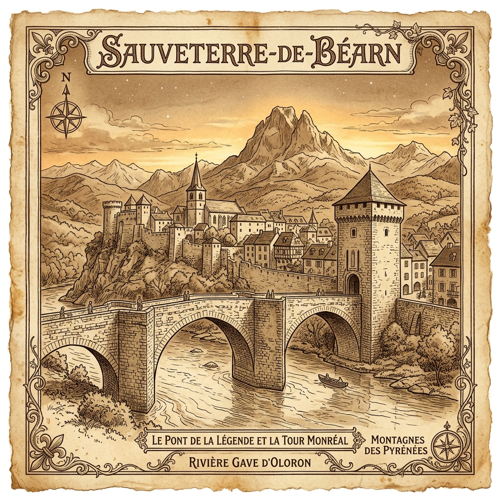

“Some places become part of who we are.”
Set in the medieval town of Sauveterre-de-Béarn, where riverbanks and ruined castles hold the memories of youth.

Safe Ground is a memoir of childhood, memory, and belonging, set in the medieval town of Sauveterre-de-Béarn in southwestern France. Born into the long shadow of World War II and raised among family stories, village legends, riverbanks, ruined castles, shopkeepers, neighbors, and lifelong friends, Jean Récapet looks back on the first twenty years of his life with tenderness, humor, and hard-won clarity.
From the tidal waters of the Garonne in Bordeaux to the gave d'Oloron below Magendie, from boarding school and wartime scars to boyhood mischief, fear, wonder, and freedom, this memoir preserves a vanished world that shaped him before America became home.
At once intimate and historical, Safe Ground is a love letter to family, friendship, place, and the memories that remain bright enough to guide us across a lifetime.